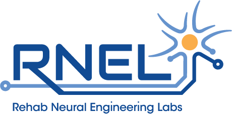

Ashesi Neural Engineering Lecture Recordings

Lecture 1 - Intro to Neurodisorders
Lecture 2 - Mainstream Neurotechnology
Lecture 3 - Intro to Neuroscience
Lecture 4 - Action Potential Models
Neuron Model Jupyter Notebook
Data files
Assignment Submission
Lecture 5 - Neural Recording Systems